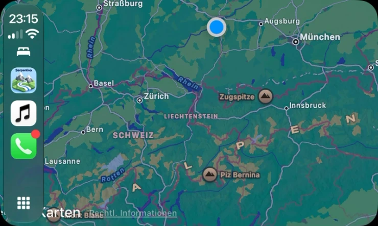
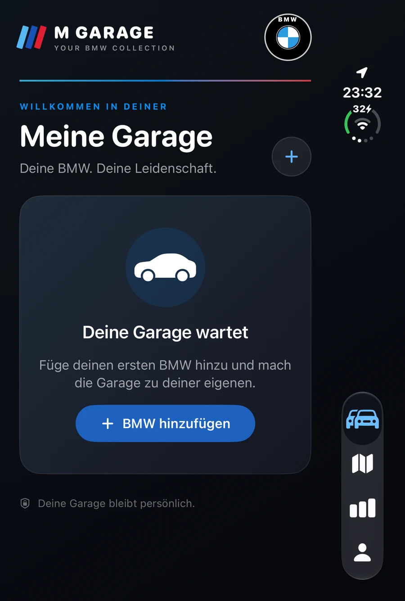

NW VISUALS · EIGENE APPS AUS SENDEN
Gute Ideen.
Apps fürs echte Leben.
Ausfahrten planen. Fahrzeuge organisieren. Kreative Projekte gestalten. NW Visuals entwickelt eigenständige Apps, die aus einer Idee ein Werkzeug für deinen Alltag machen.
01Eigenständige Produkte02Direkter Kontakt03Stetig weiterentwickelt
NW VISUALS · PRODUKTE
VORSCHAUDrei Apps. Eigene Ideen.
SerpentivoAlpenpässe · Ausfahrten · PanoramastraßenVisuals StudioProjekte · Medien · BearbeitungM GarageFahrzeuge · Ausfahrten · Kosten
✓
Eigene AppsEntdecken, gestalten, weiterdenken
ENTWICKLUNGSchritt für Schritt
↗PRODUKTESerpentivo · M Garage · Studio
SERPENTIVO✦VISUALS STUDIO✦EIGENE APPS✦DIGITALE PRODUKTE✦M GARAGE
01 / UNSER ANSPRUCH
Eine Marke.
Klare Ansprüche.
Jede App löst eine eigene Aufgabe. Gemeinsam sind ihnen eine klare Bedienung, sorgfältige Entwicklung und nachvollziehbare Informationen.
Eigene Apps & digitale Produkte
Serpentivo, M Garage und Visuals Studio sind eigenständige Projekte unter NW Visuals – mit jeweils eigenen Funktionen, Entwicklungsständen und Informationen.
Für den Alltag entwickelt
Wir entwickeln aus konkreten Anwendungsfällen heraus: unterwegs auf Tour oder am Schreibtisch im kreativen Projekt.
Datenschutz nachvollziehbar machen
Jede App erhält eigene Hinweise zu Daten, Berechtigungen und Löschung. Welche Dienste genutzt werden, wird passend zur jeweiligen Funktion erklärt.
Support & Weiterentwicklung
Feedback fließt in die Entwicklung ein. Aktueller Funktionsumfang, Teststand und geplante Erweiterungen werden klar benannt.
UNSERE APPS · SERPENTIVO
Serpentivo
Der Weg wird
zum Erlebnis.
Alpenpässe, kurvige Ausfahrten und Panoramastraßen entdecken, Stopps planen und Touren speichern. Serpentivo wird mit eigener Fahransicht, Sprachhinweisen und einer CarPlay-Oberfläche weiterentwickelt.
AlpenpässeApple KartenGPXCommunityFahransicht
Produkt entdecken↗In Entwicklung · iPhone, iPad & CarPlay


NEUES PROJEKT · M GARAGE
M Garage
Deine Fahrzeuge.
Deine persönliche Garage.
Fahrzeugdaten, Fotos und Notizen an einem Ort. M Garage ergänzt die persönliche Garage um manuell erfasste Ausfahrten und Kosten. Die BMW-CarData-Anbindung wird für zugeordnete Fahrzeuge erprobt.
FahrzeugeVINAusfahrtenKostenBMW CarData · Test
Produkt entdecken↗In Entwicklung · iPhone
M Garage ist ein unabhängiges Entwicklungsprojekt von NW Visuals und keine offizielle BMW-App. Name und Gestaltung sind der aktuelle Arbeitsstand.


02 / UNSERE APPS · VISUALS STUDIO

Dein kreatives Projekt.
Von Import bis Export.
Visuals Studio 22.6.1 bündelt Medienimport, Projektorganisation, Bearbeitung und Export auf dem Mac. Der iPhone-/iPad-Begleiter ist im kombinierten Projekt wiederhergestellt und befindet sich im internen Test.
ProjekteApple FotosCreateCanon & DJIExporte
Produkt entdecken↗Geplanter Release: Spätherbst 2026
UND WAS NOCH KOMMT
Raum für neue Ideen.
Neben unseren vorgestellten Apps entstehen weitere Ideen und Werkzeuge. Neue Projekte ergänzen wir hier, sobald es einen konkreten Entwicklungsstand zu zeigen gibt.
03 / WEITERENTWICKLUNG
Mit einer Idee starten.
Schritt für Schritt wachsen.
Wir entwickeln unsere Produkte kontinuierlich weiter. Was bereits enthalten ist und was noch entsteht, steht auf der jeweiligen App-Seite.
Verstehen
Eine konkrete Aufgabe bildet den Ausgangspunkt.
Gestalten
Klare Abläufe und eine verständliche Oberfläche.
Erproben
Funktionen im Alltag testen und Feedback aufnehmen.
Weiterentwickeln
Verbessern, pflegen und neue Ideen umsetzen.
NW
04 / ÜBER NW VISUALS
Direkt. Persönlich.
Technisch klar.
Hinter NW Visuals steht Nicolas Wegerer aus Senden. NW Visuals ist die gemeinsame Heimat eigener App-Projekte: Serpentivo, M Garage und Visuals Studio. Jede App hat einen eigenen Schwerpunkt und wird Schritt für Schritt weiterentwickelt.
NW
Nicolas WegererInhaber · NW Visuals
FRAGEN ZU EINER APP?
Direkter Kontakt.
Passende Unterstützung.
Produktfragen, Feedback oder technische Hilfe: Über unsere Supportseiten findest du den richtigen Einstieg.